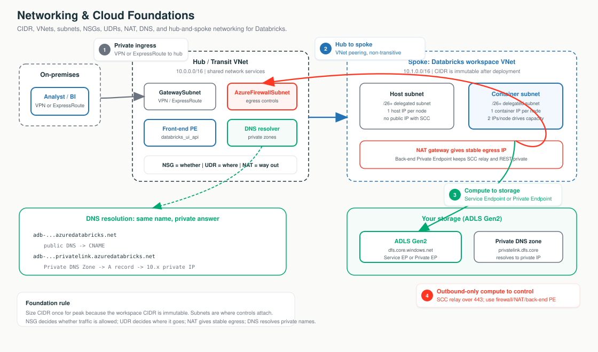

Stage 1 is the foundation that comes before any Databricks-specific control. Five primitives: CIDR (how addresses are written), the VNet/subnets (the streets addresses live in), NSG/UDR/NAT (whether a packet may travel, where it goes, how it gets out), DNS (how a name becomes an IP), and hub-and-spoke (the city plan). Get these right and every Stage 2+ control is just "harden one hop on a map you already own."
The address book, the streets, the bouncer-GPS-dock, the phonebook, and the city plan. CIDR is the address book you allocate once on paper (you can't renumber after move-in). The VNet is the gated estate you own; subnets are its streets. The NSG decides whether, the UDR decides where, the NAT gives a stable way out. DNS is the phonebook; a Private DNS Zone is the internal directory that makes a public name resolve to a private IP. Hub-and-spoke is the plan everything plugs into.
| Subtopic | What it is | Becomes (Stage 2+) |
|---|---|---|
| 1.1 CIDR | Address vocabulary; sizing math | Subnet sizing for VNet injection (immutable) |
| 1.2 VNet/subnets | The container controls attach to | Host + container subnets, delegated |
| 1.3 NSG/UDR/NAT | Allow / route / egress | SCC posture, DEP firewall, stable egress IP |
| 1.4 DNS | Name → IP | Private Link & private ADLS resolution |
| 1.5 Topology | Hub-and-spoke shape | Transit VNet (hub) + workspace VNet (spoke) |

"We size the address space once — off your IPAM, for peak nodes plus headroom — because subnet CIDR can't change after deploy. The compute runs in your VNet so your NSGs, routes, and Private Link apply, and it drops straight into the hub-and-spoke you already run."
10.179.0.0/16; bigger /n = smaller block. → 1.1Microsoft.Databricks/workspaces so it auto-manages NSG rules. → 1.2AzureDatabricks) used in rules instead of raw IPs. → 1.3CIDR is the address book. You allocate it once, before any Databricks resource exists, and you size for peak because a subnet's CIDR is frozen the day the workspace deploys. Switch the diagram between the VNet CIDR plan and the node → IP math; click any box for the what + why.
Total addresses = 2^(32 − n); bigger /n = smaller block. Azure reserves
5 IPs per subnet, so usable = total − 5 (a /26 is 59, not 64). Databricks uses
2 IPs per node (1 host + 1 container), so max nodes ≈ usable IPs in one subnet.
| Rule | Value |
|---|---|
| VNet CIDR | /16 to /24 |
| Each subnet | ≥ /26 (technical min /28, not recommended); same size for both |
| IPs per cluster node | 2 (one host + one container) |
| Max nodes (≈) | /26 ~59 · /24 ~251 · /22 ~1,019 |
resource "azurerm_virtual_network" "adb" {
address_space = ["10.179.0.0/16"] # /16 VNet: room for big subnets + a future Private Link subnet
}
resource "azurerm_subnet" "container" {
address_prefixes = ["10.179.64.0/18"] # ~16k usable; MUST match host subnet size; CIDR is PERMANENT
delegation { name = "adb"; service_delegation { name = "Microsoft.Databricks/workspaces" } }
}
# 10.179.128.0/17 left FREE in the /16 — headroom for a /27 Private Link subnet (Stage 4).Portal: Create a resource → Virtual network → IP addresses (10.179.0.0/16) →
+ Add subnet twice (host + container, each ≥ /26, non-overlapping).
A too-small subnet → "cluster failed to start, insufficient IP addresses" on scale-out; the fix is a CIDR increase / Update-network-config (Public Preview), not instant because subnet CIDR is immutable. Overlapping CIDR with on-prem/peered ranges → silent routing blackhole.
The VNet is the gated estate you own; subnets are its streets, and they're where every control attaches. A VNet-injected workspace rents two same-sized delegated subnets. Switch between VNet injection and the managed (default) VNet; click any box for the what + why.
A workspace needs exactly two delegated subnets — a host subnet (1 host NIC/node)
and a container subnet (1 container NIC/node, runs the Databricks Runtime). Both delegated to
Microsoft.Databricks/workspaces; 2 IPs/node; CIDR + delegation immutable; can't be
shared. A NIC is the VM's virtual network adapter, and each NIC consumes an IP from its subnet.
Under SCC both are private — the old "public subnet" label is historical.
| Dimension | Managed (default) | VNet injection |
|---|---|---|
| Who owns the VNet | Databricks (managed RG) | You (your RG) |
| NSG / UDR control | None | Full |
| Private Link / peering / on-prem | Not supported | Supported |
| When to use | Quick dev/test | Any production / regulated |
resource "azurerm_subnet" "host" {
address_prefixes = ["10.179.0.0/18"]
delegation {
name = "adb"
service_delegation { name = "Microsoft.Databricks/workspaces" } # hands subnet mgmt to Databricks
}
}
# Container subnet identical shape, same size, no overlap — runs the Databricks Runtime.Verify: VNet → Subnets → both show NSG attached and Delegation = Microsoft.Databricks/workspaces.
A /26 + scale-out → IP exhaustion (~59 nodes). VNet in the wrong region/subscription → it won't appear
in the deployment dropdown. Service Endpoint Policies won't attach to the delegated subnets (immutable
network intent) — pivot to Private Endpoint / NCC.
Every packet leaving a cluster passes a bouncer (NSG — whether), a GPS (UDR — where), and a loading dock (NAT — stable way out). Switch the diagram between the three controls; the highlighted arrow shows the active flow. Click any box for the what + why.
Outbound TCP to AzureDatabricks on 443, 3306, 8443-8451 (control plane / SCC relay /
metastore), 443 to Storage, 9093 to EventHub. Inbound
22 / 5557 exist only if SCC is disabled. NSG is stateful — replies are
auto-allowed, which is why SCC works with zero inbound rules.
| NSG | UDR | NAT | Firewall | |
|---|---|---|---|---|
| Decides | Whether | Where (next hop) | Outbound IP | Allow + inspect (FQDN) |
| Direction | In + out | Egress routing | Outbound only | Both |
| Cost | Free | Free | Hourly + per-GB | Highest |
resource "azurerm_route" "dep_default" { # DEP catch-all → Azure Firewall
address_prefix = "0.0.0.0/0"
next_hop_type = "VirtualAppliance"; next_hop_in_ip_address = "10.10.0.4" # firewall PRIVATE IP
}
resource "azurerm_route" "bypass_adb" { # WITHOUT this, the control plane is blackholed
address_prefix = "AzureDatabricks" # service tag (OMIT if Private Link on)
next_hop_type = "Internet" # repeat for "Storage" and "EventHub"
}Portal: route table → Routes → 0.0.0.0/0 → Virtual appliance + bypass routes per service
tag (next hop Internet) → associate to both subnets. NAT gateway → assign a Standard public IP (= stable egress IP).
A 0.0.0.0/0 → firewall UDR with no bypass routes blackholes SCC/metastore/logs → clusters won't launch
(#1 DEP mistake). A 0.0.0.0/0 → VirtualAppliance UDR overrides the NAT gateway. And after
2026-03-31, new Azure VNets have no default outbound — a NAT gateway is now mandatory.
DNS is the phonebook; a Private DNS Zone is the internal company directory that makes the same name resolve to a private IP. Switch between public resolution and private (Private Link) resolution; click any box for the what + why.
A Service Endpoint does NOT change DNS — the name still resolves to the public IP; only the route +
source identity change. A Private Endpoint requires a DNS change to a private IP via the Private DNS
Zone privatelink.azuredatabricks.net (Gov: privatelink.databricks.azure.us; ADLS:
privatelink.dfs.core.windows.net). The workspace URL never changes — only its answer.
adb-….azuredatabricks.net (URL — UNCHANGED)
└─ public DNS → CNAME →
adb-….privatelink.azuredatabricks.net (CNAME into the privatelink zone)
└─ your Private DNS Zone → A record →
10.10.4.5 (PRIVATE IP of the databricks_ui_api endpoint)resource "azurerm_private_dns_zone" "adb" {
name = "privatelink.azuredatabricks.net" # EXACT name or auto-registration won't fire
}
resource "azurerm_private_dns_zone_virtual_network_link" "adb" {
virtual_network_id = azurerm_virtual_network.adb.id # without this, the VNet never sees the private A record
}
# Verify from a VM inside the VNet: nslookup adb-….azuredatabricks.net
# ✓ a 10.x private IP ✗ a public 20.x/40.x = zone not linked or custom DNS not forwardingCustom DNS not forwarding the privatelink zone → workspace resolves public and Private Link "doesn't work" (the most
common incident). Misnamed zone → auto-registration silently skips. Long TTL during cutover → "we fixed DNS but it's
still broken." DNS controls where the name points, not whether access is allowed — pair it with
Allow Public Network Access = Disabled.
Every secure deployment lands in hub-and-spoke: shared services in one central hub, each workload in its own spoke, all routed through the hub. Switch between the generic hub-and-spoke and the Databricks mapping (hub = transit VNet, spoke = workspace VNet); click any box for the what + why.
Spoke A → hub and spoke B → hub does not chain; A can't reach B automatically. That forces inter-spoke traffic through the hub firewall for inspection. To allow A↔B: a UDR via the hub NVA, or a direct A↔B peering. Two settings make it work: Allow gateway transit (hub) + Use remote gateway (spoke), and Allow forwarded traffic (both).
| Topology | Pros | Cons |
|---|---|---|
| Hub-and-spoke | Central firewall/gateway/DNS; scales to 100s; enterprise default | Hub is a shared bottleneck & SPOF |
| Full mesh | Lowest latency everywhere | N² peerings; no central inspection |
| VPN vs ExpressRoute | VPN: cheap/quick (dev/test/backup) | ExpressRoute: private circuit, SLA (production/regulated) |
resource "azurerm_virtual_network_peering" "hub_to_spoke" {
allow_forwarded_traffic = true # let hub forward spoke-origin traffic
allow_gateway_transit = true # share the hub's on-prem gateway
}
resource "azurerm_virtual_network_peering" "spoke_to_hub" {
allow_forwarded_traffic = true
use_remote_gateways = true # use hub's VPN/ExpressRoute gateway (must exist first)
}
# Plus a spoke UDR: 0.0.0.0/0 → VirtualAppliance (hub firewall private IP) to force-tunnel egress.Expecting transitive peering → spoke A can't reach spoke B (check effective routes on the NIC). Overlapping CIDR →
peering refuses to create. A spoke with both its own gateway and use_remote_gateways → apply fails. And
the browser_authentication SPOF: one per region+zone — deleting its host workspace breaks web SSO
region-wide.
10/8, /16 VNet, equal /18–/22 subnets)100.64.0.0/10) when RFC 1918 is exhaustedStart free, step up only when mandated. Right-sizing, VNet injection, NSG deny rules, Service Endpoints, and SCC cost nothing and are backbone-private. Add NAT (now mandatory), then Private Endpoints / DEP firewall / hub-and-spoke only when a regulator or on-prem reach demands it.
| Customer asks… | Architect answers… |
|---|---|
| "How big do we size the VNet/subnets — can we change it later?" | /16–/24 VNet, subnets ≥ /26, sized for peak. No — subnet CIDR is immutable after deploy. |
"We're short on 10/8 — can Databricks live in a smaller / CGNAT block?" | Yes: /16–/24, and RFC 6598 100.64.0.0/10 is supported when RFC 1918 is exhausted. |
| "If we force all egress through our Azure Firewall, will it break the workspace?" | Only if you forget the control-plane bypass UDRs (AzureDatabricks / Storage / EventHub). |
| "Can you give us a stable egress IP to allowlist?" | Yes — a NAT gateway Standard public IP. |
| "If we turn on Private Link, does the workspace URL change?" | No — the FQDN is unchanged; only its DNS answer flips to a private IP. |
| "We already run an Azure Landing Zone hub — is the workspace just a spoke?" | Yes; reuse your hub, firewall, gateway, and DNS — nothing net-new to govern. |
2 IPs/node against a too-small subnet.First check: container subnet free IPs vs 2×nodes (remember −5 reserved).
Post-2026-03-31 VNets have no default outbound.First check: NAT gateway (or UDR→firewall) on both subnets.
A 0.0.0.0/0 → firewall UDR with no bypass routes.First check: effective routes on the subnet NIC; add the bypass UDRs.
Custom DNS not forwarding the privatelink zone.First check: nslookup from inside the VNet — public IP = zone not linked / not forwarded.
Peering is non-transitive.First check: effective routes; need a UDR via the hub NVA or a direct peer.
The single browser_authentication host workspace was deleted.First check: the browser-auth host workspace for the region.